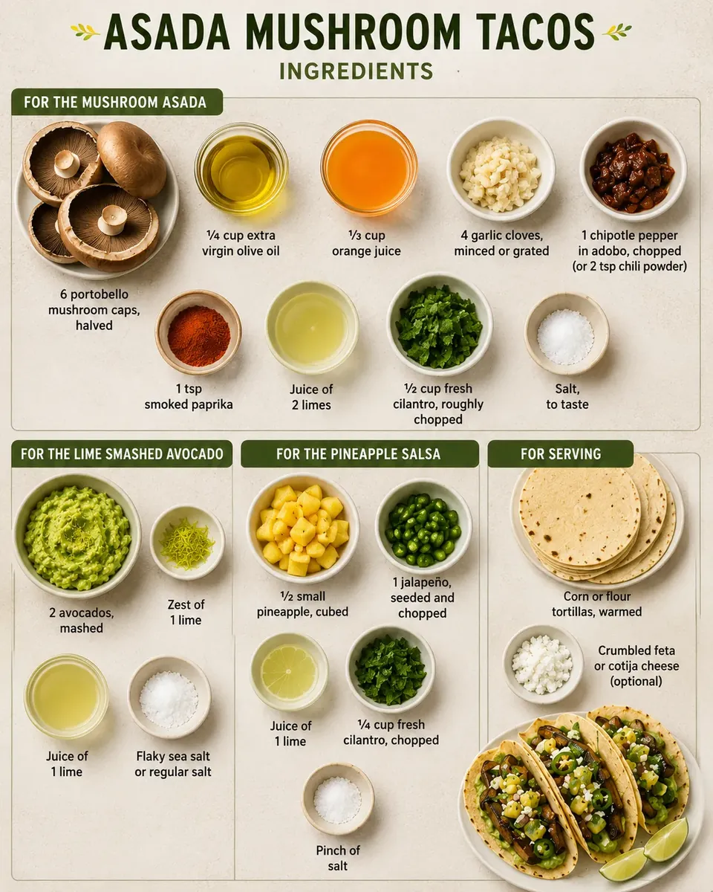
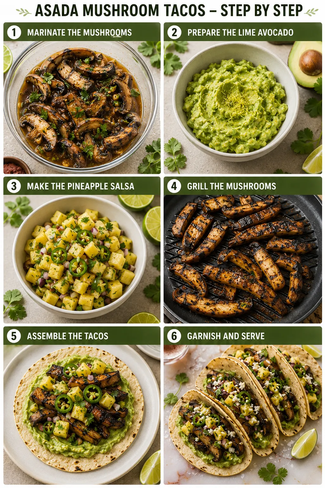

Asada Mushroom Tacos with Lime Smashed Avocado
A Healthy Twist to Classic Tacos Loaded with Greens!
Asada Mushroom Tacos are a flavorful vegetarian take on classic carne asada-style tacos, packed with smoky grilled mushrooms, creamy avocado, and fresh pineapple salsa. Inspired by the bold flavors of traditional street-style tacos, this recipe combines citrusy orange juice, garlic, chipotle, and lime to create a rich marinade that transforms mushrooms into a juicy and satisfying taco filling.
“A healthy twist to classic tacos loaded with greens!”
The mushrooms soak up all the smoky, tangy flavors and develop a delicious char when grilled, giving them a texture and taste that feels hearty and comforting. Paired with creamy lime avocado and sweet-spicy pineapple salsa, these tacos are fresh, vibrant, and full of bold flavor in every bite.
Whether you enjoy them fully vegan or topped with crumbled feta or cotija cheese, these tacos make the perfect quick lunch, weeknight dinner, or weekend gathering meal.
- Prep Time: 20 mins
- Cook Time: 10 mins
- Total Time: 30 mins
- Serves: 6 tacos

Ingredients

For the Mushroom Asada
- 6 portobello mushroom caps, halved
- ¼ cup extra virgin olive oil
- ⅓ cup orange juice
- 4 garlic cloves, minced or grated
- 1 chipotle pepper in adobo, chopped
- (or 2 teaspoons chili powder)
- 1 teaspoon smoked paprika
- Juice of 2 limes
- ½ cup fresh cilantro, roughly chopped
- Salt, to taste
For the Lime Smashed Avocado
- 2 avocados, mashed
- Juice and zest of 1 lime
- Flaky sea salt or regular salt
For the Pineapple Salsa
- ½ small pineapple, cubed
- 1 jalapeño, seeded and chopped
- Juice of 1 lime
- ¼ cup fresh cilantro, chopped
- Pinch of salt
For Serving
- Corn or flour tortillas, warmed
- Crumbled feta or cotija cheese (optional)
Step-by-Step Recipe

Step 1: Marinate the Mushrooms
Place the mushroom halves into a large bowl or ziplock bag. Add olive oil, orange juice, garlic, chipotle pepper, smoked paprika, lime juice, cilantro, and a generous pinch of salt. Mix well until the mushrooms are fully coated. Let them marinate for at least 10 minutes or refrigerate for a few hours for deeper flavor.
Step 2: Prepare the Lime Avocado
In a small bowl, mash the avocados and mix with lime juice, lime zest, and a pinch of salt until creamy and smooth. Set aside.
Step 3: Make the Pineapple Salsa
Combine pineapple cubes, jalapeño, lime juice, cilantro, and a small pinch of salt in a bowl. Mix gently and let the flavors blend together while the mushrooms cook.
Step 4: Grill the Mushrooms
Heat a grill or grill pan over high heat. Remove the mushrooms from the marinade and grill for about 5 minutes on each side until slightly charred and tender. Slice them into strips once cooked.
Step 5: Assemble the Tacos
Spread a generous layer of lime smashed avocado onto each warmed tortilla. Top with grilled mushrooms and spoon over the fresh pineapple salsa.
Step 6: Garnish and Serve
Finish with crumbled feta or cotija cheese if desired. Serve immediately while warm and enjoy these fresh, smoky, and flavor-packed mushroom tacos.